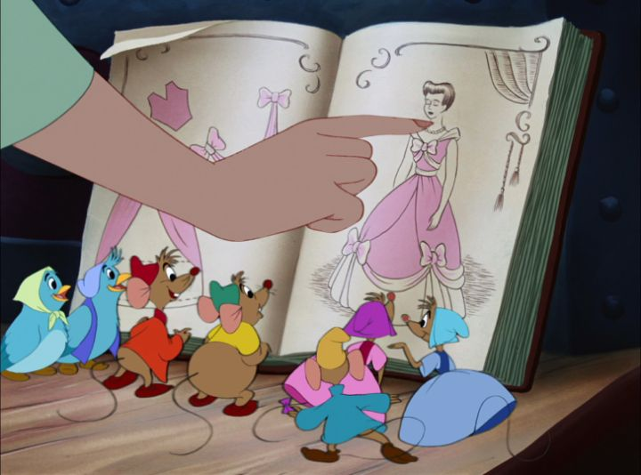

After SEVERAL package-films by Disney in the 1940's, and the company still being in poor financial shape, they went back to form with the 1950 release of "Cinderella," a new princess story based on a fairy tale, their first since "Snow White." It would be the start of a new era for the studio, where they produced some of their most memorable movies. The success of these movies would have long-lasting impacts: the famous castle at Walt Disney Land and in the studio's later logos is Cinderella's castle. The plot is well known, thanks to the success of the Disney version. Cinderella is a sweet girl, but her father marries a new wife with her own children, and upon his passing, the Stepmother resents Ella in favor of doting on her own daughters. Ella is put to work as the house's servant, cleaning and sweeping and cooking and sewing, and never allowed to leave the house (even if she could, she'd never have time to with the work to be done). Her cruel nickname of Cinderella comes from working with the dust, soot and cinders all day. Meanwhile, the kingdom's King is eager for his Prince son to be wed, and invites all eligible maidens to attend a ball for a wife to be found. The Stepmother arranges things such that Cinderella cannot attend, but with the surprise help from her Fairy Godmother, she manages to go, and is the only one the Prince falls in love with. She returns home without a word before the stroke of midnight as agreed, loses a glass slipper, the castle searches the town for the girl who fits the glass slipper, and Cinderella marries the Prince and escapes the cruel household, happy-ever-after-the-end. As a kid, I thought "Cinderella" was fine, but clearly meant for young girls rather than my demographic (boys). As an adult, I found there are some elements I can appreciate better. Namely, Cinderella herself has more attitude than I remember, following orders but also knowing she's the one running the house. That expressive personality makes her much more likable, and much more of a character, than most Princess or female characters Disney made up, and we wouldn't really see a better female lead until "The Little Mermaid" nearly 40 years later. It makes her successes and smiles, however few they are at first, feel more genuine. The other characters and subelements of the movie help make it more entertaining to a wider audience, including boys. Perhaps as a parody to the animals helping "Snow White," Cinderella is assisted by an army of birds and mice in the housework. Cinderella even sews tiny clothes for them, and somehow, the mice have learned basic English words to communicate. It's cute and heartwarming to see the animals come together to save the day at key moments. Comic-relief mascot characters Jaq and Gus and the two lead mice we follow the most, and they frequently deal with the house's nasty pet cat, Lucifer, who in turn deals with the pet dog Bruno (a generally good boy, aside from constantly wanting to hunt Lucifer).  The stepsisters are both idiots, contributing little to the story aside from their bickering. Meant to be "ugly," the designers manage to give them a design that isn't overblown in that aspect, but clear. The Stepmother isn't the most evil of Disney's villains, but is cruel and calculating, clearly the smartest one in the room, and not above getting Cinderella's hopes up while preparing to dash them later, if only for her own amusement. The Prince is a little bit of a dull slate, like every other Prince Charming, but it's a bit of fun to see him resist his father's wishes to quickly get married (and give the old man grandchildren). The King is a funny, short man despite his temper, and his advisor, the Grand Duke, is a good compliment to him as the film's voice of reason, being both confident and timid when the King lashes out. The Fiary Godmother is a sweet character, however brief her appearance is (of course, everyone knows her song, "Bibbity-Bobbity-Boo"), providing a much needed sense of hope from a human character when virtually all other people in the movie are cruel or selfish. And I can't help but love how clever the climatic resolution is at the ending (glass slippers seem so impractical, since they break so easily). All of the elements come togehter to provide a relatively enjoyable, if simple, romantic fantasy. But despite the attempt to add moments of humor, this is still a simple fantasy for young girls, and the wide appeal is limited. That simplicity might have worked in its favor though, as it holds up as well today as I've ever remembered. Visual design for characters are as expected, with expressive-but-somewhat-static lead characters (namely Cinderella, the Stepmother, and the Prince), and cartoonish designs for everyone else. The success of those designs vary... I never liked Lucifer's design that much. But there's a new style used for architecture, both for Cinderella's house and, more especially, the Castle. Rooms are tall and stylized, while also appearing clean and modern rather than classical. It's an effective look that defines the movie. Acting for the varied cast is strong, and the music numbers are sweet and romantic, although perhaps too slow. Even if you remember songs like "A Dream is a Wish Your Heart Makes" or "Sing Sweet Nightingale," I don't think you'd want to hear them again unless you were in a forelorn state of mind. "Cinderella" is a true return to form for Disney, and generally an improvement over the original Princess story "Snow White." By design, it won't be a favorite for all audiences, but it's understandable why so many girls would want to dress up as the story's lead.
- "Ani" More reviews can be found at : https://2danicritic.github.io/ Previous review: review_Chun_Tae-il_-_A_Flame_That_Lives_On Next review: review_City_Hunter_-_Shinjuku_Private_Eyes